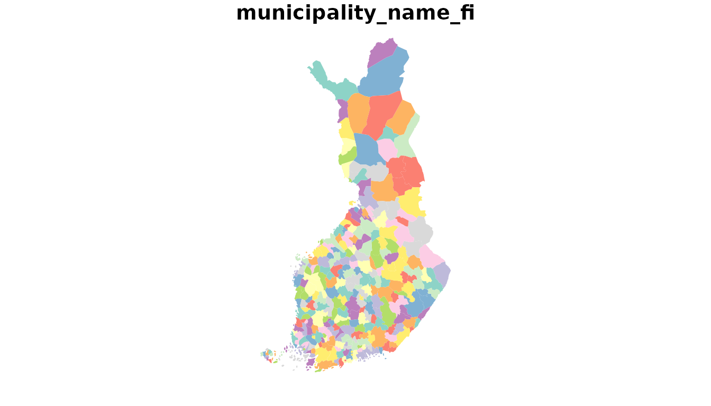
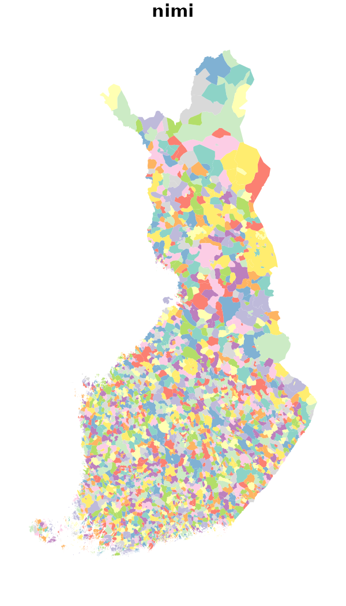
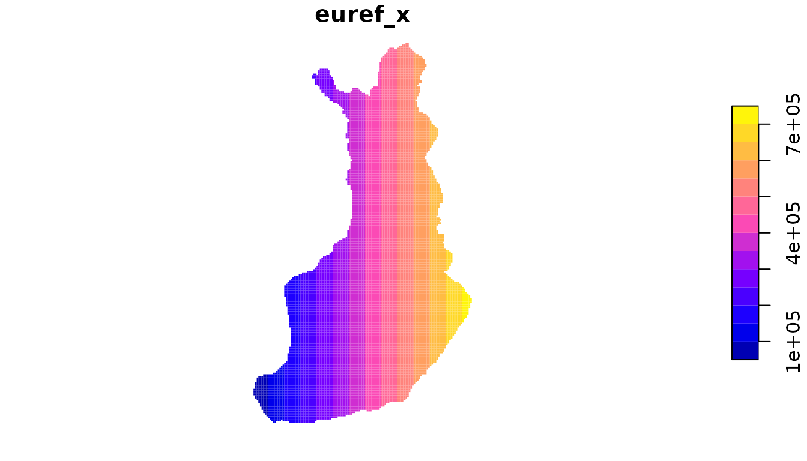
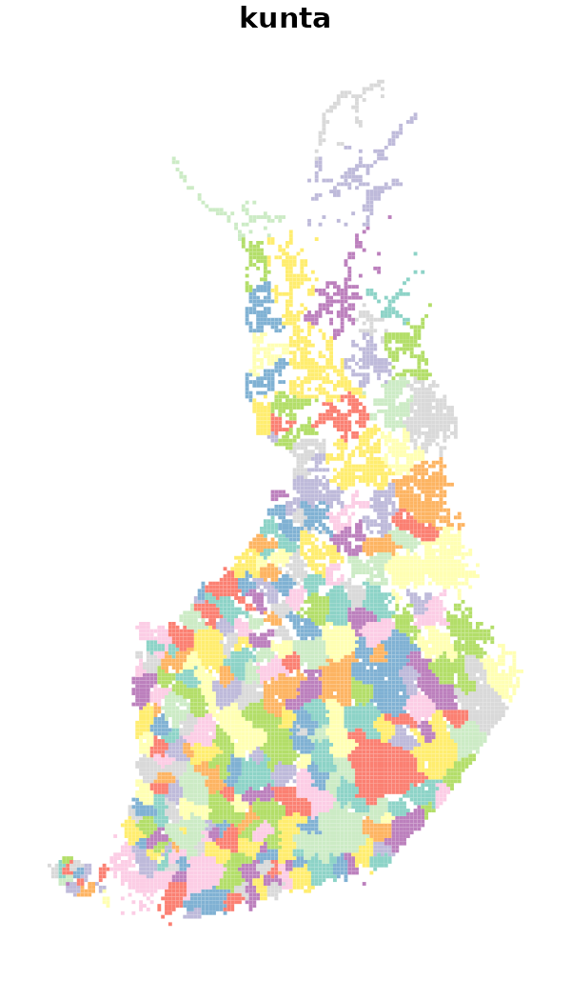
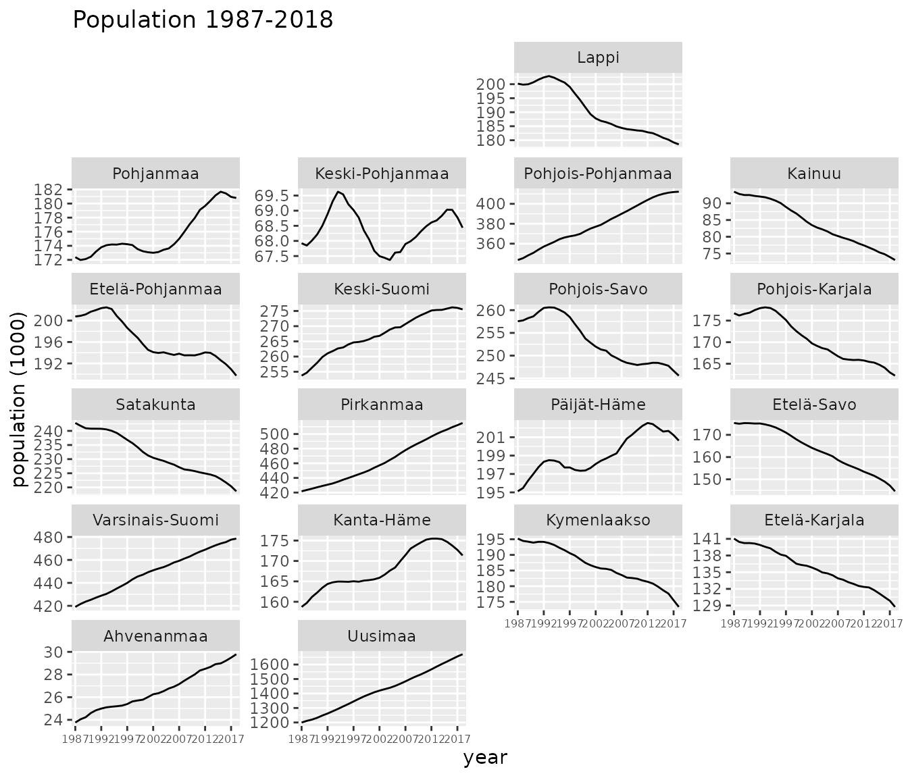

vignettes/geofi_datasets.Rmd
geofi_datasets.Rmdgeofi-package provides access to multiple dataset of different types and for different use. In this vignette we introduce the different datas and explain their use cases. Vignette Making maps using geofi-package provides multiple real-world examples of their usage.
Packages installation
geofi is not yet in CRAN, but can be installed from Github using
remotes::install_github("ropengov/geofi")Official administrative regions in Finland are based on municipalities. In 2020 there are 310 municipalities in Finland and the number is decreasing over time through mergers.
Each municipality belongs to a higher level regional classifications such as regions (maakunta) or health care districts (sairaanhoitopiiri). municipality_key_-datasets are based on Statistics Finland Statistical classification -api with few modification and provided on yearly basis.
library(geofi)
#>
#> geofi R package: tools for open GIS data for Finland.
#> Part of rOpenGov <ropengov.github.io>.
library(dplyr)
#>
#> Attaching package: 'dplyr'
#> The following objects are masked from 'package:stats':
#>
#> filter, lag
#> The following objects are masked from 'package:base':
#>
#> intersect, setdiff, setequal, union
d <- data(package = "geofi")
as_tibble(d$results) %>%
select(Item,Title) %>%
filter(grepl("municipality_key", Item))
#> # A tibble: 10 x 2
#> Item Title
#> <chr> <chr>
#> 1 municipality_key Aggregated municipality key table for years 2013-2020
#> 2 municipality_key_2013 Municipality key table for 2013
#> 3 municipality_key_2014 Municipality key table for 2014
#> 4 municipality_key_2015 Municipality key table for 2015
#> 5 municipality_key_2016 Municipality key table for 2016
#> 6 municipality_key_2017 Municipality key table for 2017
#> 7 municipality_key_2018 Municipality key table for 2018
#> 8 municipality_key_2019 Municipality key table for 2019
#> 9 municipality_key_2020 Municipality key table for 2020
#> 10 municipality_key_2021 Municipality key table for 2021Looking at the names of `municipality_key_2020` there is 70 different variables from each municipality.
names(geofi::municipality_key_2020)
#> [1] "kunta" "municipality_name_fi" "municipality_name_sv"
#> [4] "municipality_name_en" "kuntaryhmitys_code" "kuntaryhmitys_name_fi"
#> [7] "kuntaryhmitys_name_sv" "kuntaryhmitys_name_en" "avi_code"
#> [10] "avi_name_fi" "avi_name_sv" "avi_name_en"
#> [13] "ely_code" "ely_name_fi" "ely_name_sv"
#> [16] "ely_name_en" "maakunta_code" "maakunta_name_fi"
#> [19] "maakunta_name_sv" "maakunta_name_en" "seutukunta_code"
#> [22] "seutukunta_name_fi" "seutukunta_name_sv" "seutukunta_name_en"
#> [25] "kielisuhde_code" "kielisuhde_name_fi" "kielisuhde_name_sv"
#> [28] "kielisuhde_name_en" "year" "suuralue_code"
#> [31] "suuralue_name_fi" "suuralue_name_sv" "suuralue_name_en"
#> [34] "sairaanhoitop_code" "sairaanhoitop_name_fi" "sairaanhoitop_name_sv"
#> [37] "sairaanhoitop_name_en" "nuts1_code" "nuts1_name_fi"
#> [40] "nuts1_name_sv" "nuts1_name_en" "nuts2_code"
#> [43] "nuts2_name_fi" "nuts2_name_sv" "nuts2_name_en"
#> [46] "nuts3_code" "nuts3_name_fi" "nuts3_name_sv"
#> [49] "nuts3_name_en" "tyossakayntial_code" "tyossakayntial_name_fi"
#> [52] "vaalipiiri_code" "vaalipiiri_name_fi" "vaalipiiri_name_sv"
#> [55] "vaalipiiri_name_en" "municipality_code" "kunta_name"
#> [58] "name_fi" "name_sv" "erva_code"
#> [61] "erva_name_fi" "erva_name_sv" "erva_name_en"With these municipality keys you can easily aggregate municipalities for plotting or you can list different regional breakdowns.
geofi::municipality_key_2020 %>%
count(maakunta_code,maakunta_name_fi,maakunta_name_sv,maakunta_name_en)
#> # A tibble: 19 x 5
#> maakunta_code maakunta_name_fi maakunta_name_sv maakunta_name_en n
#> <int> <chr> <chr> <chr> <int>
#> 1 1 Uusimaa Nyland Uusimaa 26
#> 2 2 Varsinais-Suomi Egentliga Finland Southwest Finland 27
#> 3 4 Satakunta Satakunta Satakunta 17
#> 4 5 Kanta-Häme Egentliga Tavastland Kanta-Häme 11
#> 5 6 Pirkanmaa Birkaland Pirkanmaa 22
#> 6 7 Päijät-Häme Päijänne-Tavastland Päijät-Häme 9
#> 7 8 Kymenlaakso Kymmenedalen Kymenlaakso 7
#> 8 9 Etelä-Karjala Södra Karelen South Karelia 9
#> 9 10 Etelä-Savo Södra Savolax South Savo 14
#> 10 11 Pohjois-Savo Norra Savolax North Savo 18
#> 11 12 Pohjois-Karjala Norra Karelen North Karelia 12
#> 12 13 Keski-Suomi Mellersta Finland Central Finland 23
#> 13 14 Etelä-Pohjanmaa Södra Österbotten South Ostrobothnia 17
#> 14 15 Pohjanmaa Österbotten Ostrobothnia 15
#> 15 16 Keski-Pohjanmaa Mellersta Österbott… Central Ostroboth… 8
#> 16 17 Pohjois-Pohjanmaa Norra Österbotten North Ostrobothnia 30
#> 17 18 Kainuu Kajanaland Kainuu 8
#> 18 19 Lappi Lappland Lapland 21
#> 19 21 Ahvenanmaa Åland Åland 16Municipality keys are joined with the municipality spatial data by default.
Spatial data is provided as administrative regions (polygons), population and statistical grids (polygons) and municipality centers (points).
Municipality borders are provided yearly from 2013 and in two resolution 1: 1 000 000 and 1:4 500 000. Use 1000 or 4500 as value for `scale`-argument, respectively.
municipalities <- get_municipalities(year = 2020, scale = 4500)
#> Requesting response from: http://geo.stat.fi/geoserver/wfs?service=WFS&version=1.0.0&request=getFeature&typename=tilastointialueet%3Akunta4500k_2020
#> Warning: Coercing CRS to epsg:3067 (ETRS89 / TM35FIN)
#> Data is licensed under: Attribution 4.0 International (CC BY 4.0)
plot(municipalities["municipality_name_fi"], border = NA)
Zipcodes are provided in a single resolution from 2015.
zipcodes <- get_zipcodes(year = 2015)
#> Requesting response from: http://geo.stat.fi/geoserver/wfs?service=WFS&version=1.0.0&request=getFeature&typename=postialue%3Apno_2015
#> Warning: Coercing CRS to epsg:3067 (ETRS89 / TM35FIN)
#> Data is licensed under: Attribution 4.0 International (CC BY 4.0)
plot(zipcodes["nimi"], border = NA)
Grid net for statistics both in 1 km x 1 km and 5 km x 5km covers whole of Finland. The grid net includes all grid squares in Finland. [ttps://www.stat.fi/org/avoindata/paikkatietoaineistot/tilastoruudukko_1km_en.html](ttps://www.stat.fi/org/avoindata/paikkatietoaineistot/tilastoruudukko_1km_en.html).
Statistics Finland proprietary grid database provides the attribute statistical data for these grid nets.
stat_grid <- get_statistical_grid(resolution = 5, auxiliary_data = TRUE)
#> Requesting response from: http://geo.stat.fi/geoserver/wfs?service=WFS&version=1.0.0&request=getFeature&typename=tilastointialueet%3Ahila5km
#> Warning: Coercing CRS to epsg:3067 (ETRS89 / TM35FIN)
#> Joining, by = c("nro", "euref_x", "euref_y")
#> Data is licensed under: Attribution 4.0 International (CC BY 4.0)
plot(stat_grid["euref_x"], border = NA)
Number of population by both 1 km x 1 km and 5 km x 5 km grids. The number of population on the last day of the reference year (31 December) by age group. Data includes only inhabited grids. The statistical variables of the data are:
Total population (vaesto), number of men (miehet) and women (naiset), under 15 year olds (ika_0_14), 15-64 year olds (ika_15_64), and aged over 65 (ika_65_). Only the number of population is reported for grids of under 10 inhabitants. See Population grid data.
The data describes the population distribution independent of administrative areas (such as municipal borders). The data is suitable for examination of population distribution and making various spatial analysis.
pop_grid <- get_population_grid(year = 2018, resolution = 5)
#> Requesting response from: http://geo.stat.fi/geoserver/wfs?service=WFS&version=1.0.0&request=getFeature&typename=vaestoruutu%3Avaki2018_5km
#> Warning: Coercing CRS to epsg:3067 (ETRS89 / TM35FIN)
#> Data is licensed under: Attribution 4.0 International (CC BY 4.0)
plot(pop_grid["kunta"], border = NA)
From Ryan Hafen’s blog:
The geofacet package extends ggplot2 in a way that makes it easy to create geographically faceted visualizations in R. To geofacet is to take data representing different geographic entities and apply a visualization method to the data for each entity, with the resulting set of visualizations being laid out in a grid that mimics the original geographic topology as closely as possible.
geofi-package contains custom grids to be used with various Finnish administrative breakdowns as listed below.
d <- data(package = "geofi")
as_tibble(d$results) %>%
select(Item,Title) %>%
filter(grepl("grid", Item)) %>%
print(n = 100)
#> # A tibble: 40 x 2
#> Item Title
#> <chr> <chr>
#> 1 grid_ahvenanmaa_2019 custom geofacet grid for Ahvenanmaa region as in 20…
#> 2 grid_ahvenanmaa_2020 custom geofacet grid for Ahvenanmaa region as in 20…
#> 3 grid_etela_karjala_2019 custom geofacet grid for Etelä-Karjala region as in…
#> 4 grid_etela_karjala_2020 custom geofacet grid for Etelä-Karjala region as in…
#> 5 grid_etela_pohjanmaa_20… custom geofacet grid for Etelä-Pohjanmaa region as …
#> 6 grid_etela_pohjanmaa_20… custom geofacet grid for Etelä-Pohjanmaa region as …
#> 7 grid_etela_savo_2019 custom geofacet grid for Etelä-Savo region as in 20…
#> 8 grid_etela_savo_2020 custom geofacet grid for Etelä-Savo region as in 20…
#> 9 grid_kainuu_2019 custom geofacet grid for Kainuu region as in 2019
#> 10 grid_kainuu_2020 custom geofacet grid for Kainuu region as in 2020
#> 11 grid_kanta_hame_2019 custom geofacet grid for Kanta-Häme region as in 20…
#> 12 grid_kanta_hame_2020 custom geofacet grid for Kanta-Häme region as in 20…
#> 13 grid_keski_pohjanmaa_20… custom geofacet grid for Keski-Pohjanmaa region as …
#> 14 grid_keski_pohjanmaa_20… custom geofacet grid for Keski-Pohjanmaa region as …
#> 15 grid_keski_suomi_2019 custom geofacet grid for Keski-Suomi region as in 2…
#> 16 grid_keski_suomi_2020 custom geofacet grid for Keski-Suomi region as in 2…
#> 17 grid_kymenlaakso_2019 custom geofacet grid for Kymenlaakso region as in 2…
#> 18 grid_kymenlaakso_2020 custom geofacet grid for Kymenlaakso region as in 2…
#> 19 grid_lappi_2019 custom geofacet grid for Lappi region as in 2019
#> 20 grid_lappi_2020 custom geofacet grid for Lappi region as in 2020
#> 21 grid_maakunta_2019 custom geofacet grid for regions as in 2019
#> 22 grid_paijat_hame_2019 custom geofacet grid for Päijät-Häme region as in 2…
#> 23 grid_paijat_hame_2020 custom geofacet grid for Päijät-Häme region as in 2…
#> 24 grid_pirkanmaa_2019 custom geofacet grid for Pirkanmaa region as in 2019
#> 25 grid_pirkanmaa_2020 custom geofacet grid for Pirkanmaa region as in 2020
#> 26 grid_pohjanmaa_2019 custom geofacet grid for Pohjanmaa region as in 2019
#> 27 grid_pohjanmaa_2020 custom geofacet grid for Pohjanmaa region as in 2020
#> 28 grid_pohjois_karjala_20… custom geofacet grid for Pohjois-Karjala region as …
#> 29 grid_pohjois_karjala_20… custom geofacet grid for Pohjois-Karjala region as …
#> 30 grid_pohjois_pohjanmaa_… custom geofacet grid for Pohjois-Pohjanmaa region a…
#> 31 grid_pohjois_pohjanmaa_… custom geofacet grid for Pohjois-Pohjanmaa region a…
#> 32 grid_pohjois_savo_2019 custom geofacet grid for Pohjois-Savo region as in …
#> 33 grid_pohjois_savo_2020 custom geofacet grid for Pohjois-Savo region as in …
#> 34 grid_sairaanhoitop_2019 custom geofacet grid for health care districts as i…
#> 35 grid_satakunta_2019 custom geofacet grid for Satakunta region as in 2019
#> 36 grid_satakunta_2020 custom geofacet grid for Satakunta region as in 2020
#> 37 grid_uusimaa_2019 custom geofacet grid for Uusimaa region as in 2019
#> 38 grid_uusimaa_2020 custom geofacet grid for Uusimaa region as in 2020
#> 39 grid_varsinais_suomi_20… custom geofacet grid for Varsinais-Suomi region as …
#> 40 grid_varsinais_suomi_20… custom geofacet grid for Varsinais-Suomi region as …Here is an example where population data at municipality level is pulled from Statistics Finland from 1987 to 2018, then aggregated at the levels of regions (maakunta) and then plotted with ggplot2 using grid geofi::grid_mk_2019.
library(pxweb)
#> pxweb: R tools for PX-WEB API.
#> Copyright (C) 2014-2018 Mans Magnusson, Leo Lahti et al.
#> https://github.com/ropengov/pxweb
# Let pull population data from Statistics Finland
pxweb_query_list <-
list("Alue 2019"=c("*"),
"Tiedot"=c("M411"),
"Vuosi"=c("1987","1988","1989","1990","1991","1992","1993","1994","1995","1996","1997","1998","1999","2000","2001","2002","2003","2004","2005","2006","2007","2008","2009","2010","2011","2012","2013","2014","2015","2016","2017","2018"))
# Download data
px_data <-
pxweb_get(url = "http://pxnet2.stat.fi/PXWeb/api/v1/fi/Kuntien_avainluvut/2019/kuntien_avainluvut_2019_aikasarja.px",
query = pxweb_query_list)
# Convert to data.frame
px_data <- as.data.frame(px_data, column.name.type = "text", variable.value.type = "text")
names(px_data) <- c("kunta_name","var","year","value")
# lets aggregate population data
dat <- left_join(geofi::municipality_key_2019 %>% select(-year),
px_data) %>%
group_by(maakunta_code, maakunta_name_fi,year) %>%
summarise(population = sum(value, na.rm = TRUE)) %>%
na.omit() %>%
ungroup() %>%
rename(code = maakunta_code, name = maakunta_name_fi)
#> Joining, by = "kunta_name"
#> `summarise()` has grouped output by 'maakunta_code', 'maakunta_name_fi'. You can override using the `.groups` argument.
library(geofacet)
library(ggplot2)
ggplot(dat, aes(x = year, y = population/1000, group = name)) +
geom_line() +
facet_geo(facets = ~name, grid = grid_maakunta_2019, scales = "free_y") +
theme(axis.text.x = element_text(size = 6)) +
scale_x_discrete(breaks = seq.int(from = 1987, to = 2018, by = 5)) +
labs(title = "Population 1987-2018", y = "population (1000)")
#> Note: You provided a user-specified grid. If this is a generally-useful
#> grid, please consider submitting it to become a part of the geofacet
#> package. You can do this easily by calling:
#> grid_submit(__grid_df_name__)